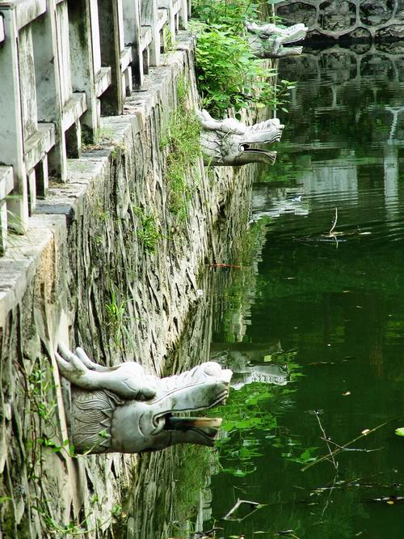
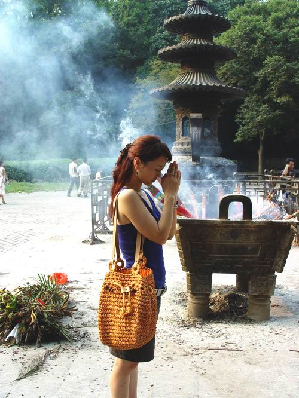
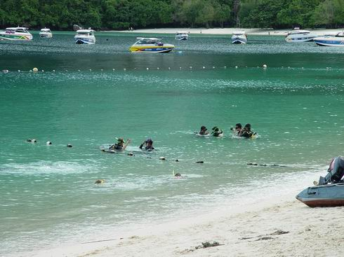

Archives : 2004-08
How Old Do You Think I Am? @ Aug 30, 2004
37 Years Old I’ve learned: “Don’t judge.”
从Jiajia的Blog上看到这个好玩的网站：ageproject.specialsnowflake.com，看照片上的人猜他们的年龄，并且他们会告诉你他们这个年龄所悟出的人生道理......我上传了自己的照片也参与一下这个游戏。
第凡内的向日葵 @ Aug 30, 2004
 在第凡内的向日葵上面看到这样一段话：
**女人最大误会：她们为”爱情”，他只是‘调戏’。
在第凡内的向日葵上面看到这样一段话：
**女人最大误会：她们为”爱情”，他只是‘调戏’。
**人生似一场感冒，一阵寒一阵热，没治好的灵药，但也不致命。人人都经历过，不觉又完了。
**谁说“知足常乐”？知足是知足，不代表快乐。说真的，知足是无计可施。
**坚强是武装的自卑。
**对我们穷追不舍矢志不渝的男人都在税局。
**女人所以红，因为男人捧；女人所以坏，因为男人宠。—也许没了男人，女人才会平安。
**要吻上很多很多青蛙，才有一个变成王子。中间好些吻，花得冤枉。
**大方，是因为选择多，所以计较少，—并非天生胸襟宽。
居然在chinasite上看见Chinese Tea出现在中国大全最好网站推荐中，不过这个网站概括的并不全面。
运动精神 @ Aug 29, 2004

今天凌晨，飞翔的刘翔在雅典奥运会男子110米栏决赛中获金牌，并打破奥运会纪录。
4点10分，国家体育总局发布贺电，言振奋民族精神云云。
体育：Physical Education，应该与德育、智育之类的词汇对应。所谓体育总局，其兄弟大约是道德总局。
然而运动员参加的是运动会，不是体育总会。
考察人类之运动，最自然的形式当是不依靠任何器具的：
跑：Run
游：Swim
飞：Fly（跳跃）
运动精神属于每一个人。体育却是他们的事情。
posted by Sunset House BLOG
将自恋进行到底 @ Aug 29, 2004
用三角架自拍时相机对焦成问题，常常面部模糊。自拍了半裸像若干，发与女友们共享。某人曰：“几日不见似乎饱满了许多？”其不知过了这个夏天偶居然胖了7斤，尚有发展空间，故不打算节食。偶脖子上的围巾是在泰国旅行时买的，盼着天气快点凉下来好将偶喜欢的围巾用上。不过，昨日又得一围巾，BESS新疆旅游回来送的礼物，偶也很喜欢！一组自拍像......
Bess新疆之旅 @ Aug 28, 2004
BESS终于出现在MSN上，这意味着她已经回到了她固定的住处：南京。MSN上一定有很多人和她SAY着HELLO，打着哈哈，俺只能在这边默默地接收她发过来的图片，把寒暄的时间让给那些不知名的朋友，其实我现在最想做的事情是去掐掐她的胳膊，哈哈~~
重新长上自由翅膀单身的她刚刚结束新疆之旅，下周一又被单位排往宁夏出差，NND~~这是什么日子啊？她从新疆发来的短信里说她和玉累得想死的心都有了......但，照片上她依然笑魇如花，脱水的皮肤一点看不出干燥来。哎，新疆可是我的出生地啊，7岁离开后就一直没再回去过，真想去看看~~


上海末尾::[浴室里的思考] @ Aug 27, 2004
这是我在上海最后写的一点东西，之后的半个月接连的迁徙，很多东西中会随时间，地点的改变而发生着微妙的变化，而有人刚刚在责骂我依然没变，永远缺乏一点感恩之心，其实我一直一直的感谢你们，正如同我默默的写出来，决不计不期望人读一样，我中还是很期待的，并且一直带着感恩的心情.... 如果肉麻，尽请省略
1．开出花来，淡出鸟来
今天要收了一分工，resume我大半时间前的日子；两个月里穿行在这个最市井不过的城市里, 有人爱讲喜欢四处游走，看人看景，而其实你在公交上就足以看尽世间百张脸，不同的是观看者的心境而已。
回来才愈加发现，本就是长在市井间的女子，在俗世里慢慢的开出花来，在俗道里过出花彩来。从冰天雪地里和Happy一起吃5毛钱的糖葫芦到觥筹交错，我一样的弯着眼睛尽量满目纯真的笑；应该是从中环的人浮于事，我都想抱以冰天雪地中的那种笑，我觉得的这是能给身边男生的最高礼遇，因为既没有任何人obligated对你好，任是恩惠，已是荣幸有加。而把原本平静的生活过得味同嚼腊，真个是，谈出鸟的人将日子也连同混染上了。所以我决定从G家搬出来的时候，深深的怕着这样的气氛；从来不不怕寂寞，怕这般空空死死的人场。
2．郁闷的老实人
老妈的教导：永远不能惹罪郁闷的老实人。这种最容易摸清秉性，已于对付的人，我一向害怕。我所从小耳熟能详的俩起杀人案，都是这种郁闷执拗，固执武断的老实人，直到要咬牙切齿的要杀你都不告诉你问题在哪里。于是，得罪了郁闷的老实人之后，只好赔笑的开路，我不要被杀，hahaha…
3．民工品位说
一日，与某美女（半传统型）捏着时髦画报赏鉴女人，伊说你知道这样自以为fabulous的女人，男人是不愿侧目的，而愿意回头的只有民工，因为他们觉得伊很画报。大笑，你知道这样的女人也是寂寞的么，也是希望有人搭讪的，即便高傲的把原本已很高的脖子在上挺一度会造成轻度肌肉拉伤，伊依然是开心的。跑题，跑题；我的悲哀在于，同样未有搭讪者，且同小区的警卫无比友好，初到的前两个星期，只有小区的警卫会喜欢问好偶尔吹口哨，当然我将其理解为我巨大亲和力的表现，hahaha…….然而，然而，我觉得从这个角度讲，民工同志是中国社会最有品位的一族，因为他们还未有任何的虚伪教义和故作姿态蒙蔽了自己的眼睛，他们还纯真的保有了男性最动物性的一面，因而他们的审美是高尚的，纯粹的，本真的……
因而，我们要努力成为位民工所欣赏的女生…..
- 我是无可救药的胖了
我是无可否认，无可救药，无可申辩的胖了…..
当真是：大腹，大腹，惊觉肥肠满肚.
四岁，苏州城，罗姑的鸡汁小蘑菇，而我恐怕再也吃不到了…
转自六翼的天使
龌龊后清纯 @ Aug 27, 2004
我终于在美食的诱惑下茁壮成长了，毫不忌讳女人形象的在母亲和他面前平静地吃下两碗米饭，一碗汤，还有若干的美味菜肴，喝下一罐冰可乐，若干颗马奶子葡萄，我妈以为我病了？？？我不准备克制对食物的欲望，期望有一天能变为一大团棉花糖被人吃进嘴里！（今晚的体重99斤）
昨天下班时间刚过几分种便冲出公司大院打车到东方商厦，路过冷清的STARBUCKS，顺便瞅了瞅货架上出售的杯子，买这种杯子是奢侈的......之后的一个多小时里冷酷地刷了两千多元买下一堆衣服，接着以最快的速度回家吃了两个大大的包子、两碗稀饭。在网络上消磨到11点多钟，期间言辞拒绝一个在澳洲留学的弟弟唱歌给我听，姿儿说我太残酷太直接，我受不了那些迂回客套，无论对方多可爱我都不想委屈自己，委屈自己才是最大的残酷。
每天，我期待的就是下班、下班。工作时间最大的快乐就是有姿儿在MSN上陪伴。我们两相互说着喜欢，一个要娶一个要嫁的，好象男人们都死光了，那个爽~~不要对我吼，我只是把工作当垃圾在处理，这比你张着鸡爪子的手练瑜珈要神清气爽地多。工作的另一大乐趣来自对人的观察，不需要多长时间那些刚工作的年轻面孔上便会悄悄布满诡秘及虚伪的表情，瞳孔里模仿着各种各样的符号，这是我们环境所渲染的气质。
和时间赛跑 @ Aug 26, 2004
每天早晨都在和时间赛跑，从家里开车到公司20多分钟的路程必须缩短到十五分钟以内，那个惊险......这还不是两个人共用一辆车的最大问题，最大的问题是缺觉。驾驶者本可以睡到自然醒，但每每为了送我上班只能到他自己的办公室里睡回笼觉，据说睡得那个香啊...口水都可能流出来了。
昨晚我开车了，再次激发了驾驶的欲望。整个夏天没去驾校学车，事实上没照对于我可能更好些，真的拿到照儿了还不得整天在南京城里兜圈子，什么时候腻了没准也开到西藏去。听说南京这里有许多的驾驶者俱乐部，常组织一些自驾游活动。之前上过诸如XCAR这类汽车网站，没兴趣，越来越讨厌群居生活，包括那些无意义的打着哈哈的聊天。
这几天一直在听第三碟第四首的英文歌，不知什么名字...懒得都没拿出来看，时间飞快地在车轮上行走，歌曲反复地播放，直到听腻了为止。担心上班迟到开快车；知道某一天会不爱了拼命地在这一秒爱；喜欢这首歌总有腻得流汗的时候所以反复播放反复听，快乐什么时候就没了所以要拖住时间，停留停留再停留一些......琼瑶笔下的人物某些时段大多掩耳盗铃亦或自欺欺人，这是他们自创的最大痛苦。
感受和时间，究竟哪一个变化的更快？
A答：“感受跟时间应该是相应而生的。感受很好的时候，你会觉得时间飞快。相反，你会觉得时间走得太慢，你会一秒一秒的数。”
B答：“当然是感受，呵呵， 我昨天心情不要太差啊，回去就睡觉，今天想通了一些事，心情不要太好啊......也不过短短一天时间而已，但是变化却那么大。反正，我觉得自己是可以改变心态的，时间却是按固定的走法在一成不变地运动，永远没有自己的速度”
C答：“感受更快，因为感受有加速度，而时间只能一秒接一秒。”
那种开心 @ Aug 24, 2004
办公室从抽屉到桌面乱得一塌，可是心却安静的快乐。
同事Chris从Sri Lanka出差回来送了一盒Zesta的柠檬茶给我，据说那边的茶叶比较有名，选了几张他拍的照片：
阿库吧往德里的路上

泰姬陵

泰姬陵路边

孟买


清凉窈窕、无奈 @ Aug 22, 2004
行走在凉爽的新街口街头，有个年轻人递上一张名片，希望我能去他们的公司看看，他们公司主要经营平面广告模特等业务。问我有没有兴趣做兼职......我说我太老了......突然想起昨天在单证部遇见K，他大叫道：“你成妖精了，怎么还没老啊？！”办公室里的人都听得到他的声音，于是我不甘示弱地大声回应道：“你盼着我老啊？急死你......”而这时我却经不住劝说还是虚荣地把卡片装进兜里。
之后在天桥边瞅见一个背着破包的瘦弱中年男子，浑身脏兮兮的，漫无目的的行走着。我突然感到一阵惶恐，来自贫穷、饥饿、寒冷及居无定所的惶恐。和周围衣着亮丽的人群形成鲜明的对比，也形成经济上的强烈对比。哪怕每月五百元的收入这时都是那么富足的，我对自己平时消费习惯感到非常不安起来。其实特别不愿意看见这样的情形，心里说不出的难受，可是又很无奈。
清风把酒相送 @ Aug 20, 2004

月色总朦胧
与清风把酒相送
太多的适从
醉生梦死也空
和你最后缠绵你曾记得
乱了分寸的心动
怎么只有这首歌
会让你清醒后
醉清风
梦境的虚荣
清唱一曲相送
还有没有汹涌
风花雪月也溶
和你最后缠绵你曾记得
乱了分寸的心动
我的去向无影踪
只为消愁一起游
无人宠
是我想得太多
犹如飞蛾扑火那么冲动
最后 还有一盏烛火
燃起我
曲终人散
谁无过错
我看破
日子这朦胧
已经把梦相送
来得这凶猛
醉生梦死也空
和你最后的下面
你曾记得
梦竟的思游
清唱一曲相送
还有没有汹涌
风花雪月也溶
和你最后缠恋
你曾记得
梦竟的思游
清唱一曲相送
还有没有汹涌
风花雪月也溶
和你最后缠绵你曾记得
拉了分寸的心动
我的去向无影踪
只为消愁一起游
无人宠
是我想得太多
犹如飞蛾扑火那么冲动
最后 还有一盏烛火
燃起我
曲终人散
谁无过错
我看破
是我想得太多
犹如飞蛾扑火那么冲动
最后 还有一盏烛火
燃起我
曲终人散
谁无过错
我看破
闻到秋天的味道 @ Aug 20, 2004

晚上妈妈送来三十个饺子、虾和红烧鸡块。
于是，下班后回家吃饭。
妈妈突然有些激动地和我谈起一些往事儿，她那种优柔的态度深深影响着她的儿女们。她谈论的那回子事儿，我和我的女友们在近期才不约而同地达成共识，比妈妈意识到要早几十年，这是社会的进步还是女人们的进步？女友说：“今天上厕所的时候一阵难过，难过的都想哭。一出来就正常了。只是喉咙发哽而已，心有点痛的感觉，但是泪却流不下来。”其实，看清楚事物本质，承认并接受现实，还有什么可痛苦的？这是我最近的总结。我也有女友说的那种感受，那种酸涩，可是没什么值得哭的。
三伏天结束，晚上不用开着空调睡觉了，傍晚时分隐约闻得到秋天的味道。当食物开始给你享受的感觉时，不可抑制的是体重的增加，大概两个月时间我迅速增长了4斤。尤其喜欢吃麦当劳的炸薯条，每次都会买双份。还有什么比吃炸薯条更令人愉快的事呢？
懂爱的人看得懂的故事 @ Aug 16, 2004
 天使艾美丽》一片, 拍摄手法奇特,卡通色彩的人物形象，轻松幽默的情节配以赏心悦目的摄影，色彩斑斓、天马行空的美术设计，细腻的心理,感情, 拍出了生活的美丽. 让我们感觉自己游在童话的世界里。《天使艾美丽》就像一束温暖的阳光，照亮2001年法国影坛，也将让•皮埃尔•热内（Jean Pierre Jeunet）重新聚光打亮，揩去灰尘。
天使艾美丽》一片, 拍摄手法奇特,卡通色彩的人物形象，轻松幽默的情节配以赏心悦目的摄影，色彩斑斓、天马行空的美术设计，细腻的心理,感情, 拍出了生活的美丽. 让我们感觉自己游在童话的世界里。《天使艾美丽》就像一束温暖的阳光，照亮2001年法国影坛，也将让•皮埃尔•热内（Jean Pierre Jeunet）重新聚光打亮，揩去灰尘。
《天使艾美丽》看了才会知道，它奇妙到何种程度。照片会开玩笑，玩偶会说话，照片会窃窃私语，狗会僵死之后一动不动，而做爱时候的激动会让橱柜上的玻璃品集体抖动……一个非童话的电影出现了童话中所能实现的所有事情，却似乎充分的证明那句古训“存在即合理”—一切只为了侧面艾美丽而变得格外的正常！
简简单单迈入30岁 @ Aug 16, 2004
生日这天第二次去栖霞古寺，物是人非。
上一次是94、95年的时候骑自行车去的。烧了五柱香燃了两只红烛，简单吃了个晚饭，这天就算过去了。
1、栖霞古寺放生池

2、朱红柳绿

3、守你一万年

4、上苍知道......

HANK澳洲滑雪记录 @ Aug 14, 2004

男人的分手方式 @ Aug 14, 2004
—转自北京女病人
如果俺们都足够努力，那么会不会在一起？
遗憾的是，世上的事情本没道理可说，努力的人往往只有一个，就算两个人挣扎着靠近，又常被造化作弄。那么我们谁来说分手？
爱过后不爱，爱却深知不能爱，抑或根本就不曾爱，无论如何，总有收梢。有MM说她根本无法得知他是否还珍视她惦念她，即使自己千般试探。俺说那也是花痴，对于男人根本不需要费力去猜想，只要看，他是否主动电话你，他是否主动出现在身边，他是否愿意为你用力用金钱。若不然，便是不爱了。哪怕他心中千般波澜起伏，却无片言只字，那便也是不能爱了。
而女子的不舍，更有不甘，总想要份完满的答覆。如盖棺论定后才能重生。俺们都是这茫茫海中的独木舟，擅用双桨者毕竟稀少，两个人左右划一只，才圆满。
可是，他，他们，只是离去，留下无解的谜题叫人在夜深辗转。
俺对MM说，男子的强壮只在表面，天性是软弱而退却，尤指感情问题。他们开场象导演一样掌控局面，慢慢推动剧情的发展，故事的高潮到来后戛然而止，留下一个争议的结局叫众人猜想，俺想，那是因为他们不知道怎么面对那尴尬，也可能是，留几分余韵，留下拍续集的可能。
相当多男子有了和女友分手的念想不会雷厉风行。男人是怕麻烦的，也怕冲突。他们的方法是冷淡拖延。从来和你亲密无间的那个人突然不会主动致电了，只有你每次打过去。而电话那边的他客气冷淡，总是说我在开会我很忙请过一会再电；人在一起的时候也是心不在焉提不起兴致，不是专心看电视就是认真的吃着一饭一菜，问他的话他总是听力不好；反正是，突然有层看不见的膜隔阂了二人，叫女子感觉冷淡而无趣，知道他的那颗心不在她身上。如此几次，女人也冷了。于是两人各自天涯，或许在很久后某个无聊或有利益的夜晚，再次问候感慨，那也是明日黄花，只能一起赚钱，再无法一起睡觉了。
有种男人会玩人间蒸发，突然间好象这个人重来都未存在过。女人的手中，只有一个再也打不通，或者无人接听的电话号码。日光下恍如做了一场春梦。那些人，是城市的过客，是小说中的传奇，是通缉榜上的骗子，是脆弱得不敢面对的孩子。只留下一个长久的谜，叫人苦苦的摸索慨叹。
相处时间长了，想分手并不容易。因为已经了解和习惯，一些话不好轻易出口。于是通常的办法是制造事端。或吹毛求疵，或小题大做，或无事生非，反正都可以叫情绪没理智的蔓延，于是扩大影响，终于吵闹分手。女子气头上干脆痛快的吵之闹之，余怒未消的在家中等待他回来赔礼道歉，谁知道那人竟真的一去不回头，这才惊慌起来。只是，她始终不知道那背弃已经是早早预谋的了。
那些爱或没爱过的男人们，软弱，逃避，或善良至不忍女人受伤，无论如何，还是不爱了。却很少有人认真的对着女人说，我们分开吧。他们总是无法面对女子激昂情绪的冲突和柔肠百转的黯然，他们也怕伤害女人，也怕伤害自己，于是逃开。只是，只是不知道多少女人，在深夜里互相拨通电话，倾诉着，猜测着他们离开的动机。
只有两种人会认真的看着对方的眼睛，平静的说：我们分手吧。一种是早期琼片秦汉SB为形象代言的那种未涉世事的青年男学生，自我感觉好得不得了，把男女之事看得比个西瓜还大，弄得一举一动演戏般的追求喝彩和高潮；另一种是理智，冷静，有责任的男人。他会告诉你，我们即使曾经爱过，现在有这样的原因不可能在一起，这并不是你一个人的过错，也不是你这样的女人没有可取之处。我们只是，不爱了。
虽然冷酷痛苦，但是有尊重在其中。女子若得到男人的尊重，便很快能平息伤口从头来过。只是，大部分的人没有这样的担当，于是他们走了，留下了连绵无绝的伤痛离开，让那女人独自在自怜自弃，在无数的夜晚寻找着答案拼凑着自己的尊严。其实或许双目对视间，对方的心意便已了然。只是他们想，死已死了，谁在乎有没有全尸呢。
还记得那时俺对他说：如果有一天不爱，请直接告诉俺，千万不要就那样消失掉。
他说：我答应你。
他还说：相信我，我们还会见面的。
嘿，旅途开始了 @ Aug 13, 2004
 这个上火的TIME，送走背起行囊前往我的出生地新疆旅行的BESS和玉。城市渐渐地空起来，没有女友和我争吵了，只好等待明天即将到来的台风以了郁闷的氛围。
这个上火的TIME，送走背起行囊前往我的出生地新疆旅行的BESS和玉。城市渐渐地空起来，没有女友和我争吵了，只好等待明天即将到来的台风以了郁闷的氛围。
下午收到BESS的短信：正骑在骆驼上穿越沙漠......那时我妒忌的真希望她从骆驼身上栽下来。
晚上吃过老妈烧的绿豆稀饭和两个饱满的菜包子，洗了澡躺在铺着绿色绣花的床罩上，看卫慧的《禅》，这时BESS来的短信上写着：我们刚刚坐上长途汽车！要经过24小时1800公里前往伊犁。开着手机，遇到危险会向你求救。其实我还是挺担心的，周围全是维吾尔族人，语言也不通。当我上厕所屁股蹭到墙壁上的时候，我对自己说：“嘿，旅途开始了。”当时笑得我差点翻到床下......送BESS到火车站的那天，她拖着大红色拉杆箱，背着我的大背包渐远的身影是那么弱小，这和她平日丰腴的体态判若两人。此时前往伊犁的1800公里的旅程中，我不希望她体会到那伤人的孤寂！心里一丝丝的心疼慢慢涌上来......
女人们疗伤时最通常选择的方式就是旅行。在我看来这是浪费金钱和时间，首先无心欣赏风景、享受旅行快乐，其次内伤也不会医好。最有益的方式是等待自己的心真正安静下来，与自己的好友家人呆在一起。有人问男人受伤后会怎样疗伤？“疯狂地玩弄女人？”我的嘴角游动着一丝坏笑和不屑。
乌夜啼 @ Aug 12, 2004
林花谢了春红，
太匆匆，
无奈朝来寒雨晚来风。
胭脂泪，相留醉，
几时重。
自是人生长恨水长东。
上火 @ Aug 12, 2004
 右边牙床有酸胀感，牙齿酥软；
右边牙床有酸胀感，牙齿酥软；
右边的嘴角上集中长了些小水泡，破了，很疼，不便于接吻；
右边鼻翼旁有个疙瘩似乎正在挣扎地往皮肤外面挣脱，胀痛着；
右边下眼睑有颗粒的东西正在迅速成长，担心将来的几天不能戴隐型眼镜了......
上火也象我这个人一样，都发在一边一个方向，用BESS的话讲：够偏执；用姿儿的话讲：别人左右不了我的思想；用我的话讲：够执着。啊哦，对一个事物的描述和观察果然有着不同的方式和角度。
中午借了同事的自行车去不远处的店里洗照片，顺便在旁边的饭店里点了一碗绿豆稀饭、两碗银耳莲子汤、一碟苦瓜。一个人吃饭与一个人逛街的感觉一样爽，不用寒暄不用客套，不用你推我让的，为什么大多数女人做什么事情都喜欢要人陪着？一个人多简单啊？当然我还没变态到不需要男人的程度。排除病态的爱情不谈，一般状况下不喜欢束缚别人，自然也不希望被人束缚。
其实，那些上火的疙瘩和疼痛感只要不毁容，大可随处生长，何必偏执地只长右边呢？由此看来，任何不受束缚的都必须具有一个前提，是吗？
告诉你为什么越来越可爱 @ Aug 11, 2004
告诉你为什么越来越可爱,你在改进你自己，例如：拍照片拍得更好了；文章也写得更好了；你不再让某些旧事影响你的情绪了；你不再骂街了；你变得温柔了；你更纯真了；你的思想更清晰了；你道歉了；你放气球了；你更轻松快乐了；你更有女人味了，你保持了你的优点，去掉了你的缺点，所以你越来越可爱了。希望你永远快乐，可爱！
但愿你能理解我都说了些什么 @ Aug 10, 2004
人一生最艰苦的岁月是10岁到70岁的那段岁月。—海伦.海斯
爱意味着受折磨。为了不受折磨，你就不要去爱。但你又会受到无爱的折磨。所以爱是折磨，不爱又是折磨。折磨就是折磨，为了快乐还是去爱。于是快乐也成了折磨。但是折磨使人不快乐。所以为了不快乐，你就要去爱，用爱带来折磨，或者因为太多的快乐而感到受折磨。但愿你能理解我都说了些什么。—伍迪.艾伦《爱与死》
立秋那天 @ Aug 10, 2004

“虽然我们从不曾说什么,可是我们从不曾离开过”
打算午睡，这时恰好看了你的来信，乐得我无法再睡了。
前天立秋，但南京的天气依然很热，幸亏你在异国避开了这里的酷暑，立秋那天我吃了四分之一的西瓜，很甜。这样的天气总是令人不安和莫名的烦躁，但我的心却有些安静了，一点点往下落，象秋天银杏树叶子般纯净，落在温暖柔软的泥土上沉睡。
Sunken dreams @ Aug 09, 2004

普吉岛潜水归来 @ Aug 07, 2004

夏季的每一天 @ Aug 06, 2004
早晨起来熨衣服，没找到蒸汽熨斗，只好用旅行熨斗凑合着熨，最后还是穿着皱巴巴的衣服和裙子上班了。
旅行结束后更多的是疲惫，接着是情绪低落，不想笑也不想说话，哪怕是寒暄的，我也可以变得无动于衷变得如此冷漠？喜欢边乘车兜风边听喜欢的音乐，思绪长上翅膀的感觉。
昨天早晨看见一个父亲骑车带着一个5、6岁的小女孩在炎炎烈日下，能体会到小女孩的快乐和无忧，当我小时侯在合肥郊区居住时也是这样的神情，条件不是太好，但夏季的每一天都是那么快乐。突然羡慕起来......
《病忘书》 @ Aug 06, 2004
中午跑去南京书城买北京女病人的新书《病忘书》，售价18元一本，天津人民出版社出版。封面上写着“2003年度获得BLOGCN.com优秀内容奖第一名。她是中国大陆最受关注的女博客”。没找到她的照片，一个漫画的小女人盘腿端坐在封二的中间位置上。一共249页，还好不是注水猪肉般字特大排版特稀疏的那种，加之一直读她的BLOG，内容自不会失望，18元值。
榕树下的评论：“她是中国大陆最受关注的女博客，她是够贫又贫得到点儿上的老大。一不留神，你就在又油又毒的文字夹缝里读到特别柔软的部分。这样的文字，会让人一点招架力都没有了……就像期待已久的病愈后那个神清气爽的时刻。”有人说这种评论特烂，我倒没觉得。
好地都叫猪拱了 @ Aug 05, 2004
昨天有个家伙说：“如果可以让我年轻12岁，现在所拥有的一切我都可以不要。”
某友仍无女友，和他谈到这个问题时，他说：恩，那种一个人走在街上的孤独和寂寞很难忍受。再看人家都是两个两个的，心理都快变态了，还好把持能力还好，否则都不知道能做出什么事情来。
我：看你的意志坚如泰山，怎么会呢？你要强奸还是猥亵 ？不然就是自虐？
他：我想拆散他门
我：总不能都想拆散吧？
他：够变态吧
我：变态，不过算轻微的变态了
他：呵呵，关键是丑男找了美女我就更难过了。好地都叫猪拱了。
我：什么叫猪拱？
他：就是被那些猪头们把好庄稼给毁了
To Be By Your Side @ Aug 05, 2004
Across the oceans Across the seas, Over forests of blackened trees.
Through valleys so still we dare not breathe, To be by your side.
Over the shifting desert plains, Across mountains all in flames.
Through howling winds and driving rains, To be by your side.
Every mile and every year for every one a little tear.
I cannot explain this, Dear, I will not even try.
Into the night as the stars collide,
Across the borders that divide forests of stone standing petrified,
To be by your side.
Every mile and every year, For every one a single tear.
I cannot explain this, Dear, I will not even try.
For I know one thing, Love comes on a wing.
For tonight I will be by your side. But tomorrow I will fly.
From the deepest ocean To the highest peak,
Through the frontiers of your sleep.
Into the valley where we dare not speak, To be by your side.
Across the endless wilderness where all the beasts bow down their heads.
Darling I will never rest till I am by your side.
Every mile and every year, Time and Distance disappear I cannot explain this.
Dear No, I will not even try.
For I know one thing, Love comes on a wing and tonight I will be by your side.
But tomorrow I will fly away, Love rises with the day and tonight I may be by your side.
But tomorrow I will fly, Tomorrow I will fly, Tomorrow I will fly.
畸形的美丽:泰国人妖 @ Aug 03, 2004
人妖在泰国虽然不能真正为主流社会所接受，但好在并不遭受很大的歧视，学校里有人妖学生，商场里有人妖售货员。据不完全统计，到20世纪90年代，泰国人妖的数量已达2万多。
大多数人妖选择这条道路是为了挣钱，也有一些人则是天生的性别错位，但走上这条路后，大多数人妖都发现，“她们”不但要经历生理和心理的磨难，挣钱糊口也并非想像中那样简单。泰国法律规定，人妖仍然是男性，不过人妖在社会日常生活中定位为女性。人妖上公共卫生间会根据自己当天的服饰选择，如果是女性装束，那么自然去女卫生间。
前不久，位于泰国北部清迈府的一所技术学校成了当地媒体关注的对象。该校除了正常学生以外，还有15名人妖学生，这些特殊学生长期饱受在上厕所时被其他男女同学奚落之苦，迫切希望能有一所真正属于自己的厕所。近日，校方特意为“她们”修建了一所专用厕所，使“她们”终于梦想成真。
据泰国媒体报道，
清迈这所技术学校修建的人妖厕所有个美丽的名字，叫作“粉红莲花厕所”，里面设有4个蹲式马桶，没有男生用的小便池，厕所门上挂的是男女两性标志。这个厕所仅供15名人妖学生使用，禁止其他学生进入。
泰北清迈技术学校的负责人表示，根据学校规定，人妖学生在学校里必须身着男装，但却可以留女生发型。这些人妖学生习惯清晨一来便使用女生厕所，但常常惹来女学生不高兴，有些女生会对这些人妖学生恶作剧，令其难堪。但当人妖学生走进男厕所时，会比进女厕所惹来更多麻烦。男同学不但会嘲笑他们，有时还会无情的追打、戏弄他们，最终他们只能以泪洗面。这样的戏码在校园里时常上演，人妖学生们一直希望能有自己的厕所。
为了让这15名人妖学生受到更多尊重，校方决定让他们圆梦，为他们设计了一间专用厕所。学校负责人波萨旁强调，校方并不支持学生成为人妖，只是竭尽所能解决学校里一个不开心群体的问题，让他们安心地在属于自己的厕所里如厕，可以自己尽情享用，再也不会遭人取笑、被人欺负了。
泰国人妖闻名于世，作为泰国旅游的“特色”之一，它由来已久，一直保持至今。人们把人妖称之为“人造女人”或“第二种女人”,以此同天然女人区分开来，而事实上在泰国，人妖的身份证性别一栏仍注明“男”，即男儿身，女儿装。除少数人因心理因素导致性别错位而自愿成为人妖外，大多数人系生活所迫。很多眉清目秀的男孩在七、八岁时就被送进“人妖”专门学校严格训练、年龄稍大一些后就开始吃激素、打针，有的还做了变性手术，使其完完全全女性化。“她们”一般十七、八岁开始登台表演，在此之前同其他人一样正常生活、学习。人妖的命运大都很惨，寿命一般只有40来岁，完全靠吃青春饭，一生中只有几年的风光日子。一旦年龄大了，不漂亮、不吸引观众了，就被淘汰，新的“人妖”就顶替上来，真正出名赚大钱的寥寥无几。虽然人妖带动了泰国的旅游经济，泰国人对此习以为常，但并不真正为主流社会接受，就连人妖本人对自身地位也难以确定，甚至应去男厕还是女厕解手都成问题。
即使浓郁的色彩和华丽的服饰也掩盖不了那些泰国人妖令人心酸的现实......


旅游，静心无为真境界 @ Aug 03, 2004
下笔写之前，我在想......什么时候我才能对自己的生活没有太多的要求，对自己没有太多的要求，能做到这样可以令自己更加快乐，不是吗？！别总说我事多，不这样要求，我想我会死的。
鉴于普吉岛和新加坡的团体旅游体验，感慨起自助游的诸多好处来。无论行程安排的如何浅显，自助游都可以深入当地人最平实的生活节目里，即使是最基本的乘车、吃饭、住宿、问路、泡吧...亦都是对于那个地方的一种最为亲近的了解过程，能够在回忆里闪烁出可爱的光彩！
我还清楚地记得在法国尼斯餐厅里遇见的挪威老年夫妇，记得他们和蔼的笑容以及他们对80年代访问中国的幽默描述；脑海里还清楚再现2003年大年29和另外三个新认识的旅人包车从丽江前往泸沽湖大雪纷飞的惊险旅程......这些都能令我又一次感受到旅行的快乐！

Phi Phi Island
有篇文章是这样写的：8天5国欧洲游，只游了14小时
我曾参团旅行欧洲，8天游览了法国、德国、荷兰、比利时和卢森堡五个国家。朋友说我太赚了，一下子“进帐”5个。我沾沾自喜，但后来细算，惊得我差点从床上掉下来，从此再也不好意思说：“我游过欧洲”之类的话了。
行程表时间：8天，24X8=192小时。
实际旅行时间：
1、国内驻地往返机场2小时，国外机场往返驻地2小时，共约4小时。
2、候机（往返）约6小时（旅行社要求提前2小时以上到机场集合）。
3、乘机（北京巴黎往返）共约22小时。
4、旅行中乘大巴：每天平均6小时X6天=36小时。
5、进酒店休息：每天平均12小时X6天=72小时。
6、午饭及晚饭：每天平均2小时X6天=12小时左右。
7、游览时间：192小时-174小时=18小时。
真是不算不知道，一算吓一跳啊！这样再除去购物时间约4小时，实际游览时间仅仅剩下14个小时，平均每天不到3小时！按欧洲“8天5国游”团单，实际游览时间只占7%！按旅行费用12000元人民币（交旅行社的）计算，在欧洲实际游览一小时要花857元！
后来我又做了一次为期8天的德国旅行，每到一个城市都能碰到几个德国同行，我总回问他们：“你们到过中国旅行吗？”90%的德国人回答：“没有。”我接着问：“WHY NOT？”答案惊人的一致，几乎所有的回答都是：“中国太大太美，至少需要旅行一个月才能品到一点原汁原味，如果只有两周假期，根本不够。这或许就是我们总能在街头看到身背近一人高的背包“外国驴”手拿地图边走边看，而在欧洲城市街头总能看到跟在举着小旗的导游后的中国团的原因了。
旅行消费学问太大了，很重要的一点是我们要清楚自己真正从旅行中得到了什么，看过了“红磨房”的艳舞不算到过巴黎，在蒙马特泡一个晚上，在塞纳河畔逛过一天，在卢浮宫转过一圈，才算摸过巴黎的裙褶。

我们从大PP岛返回普吉岛的船上遇见一对美国年轻夫妇，他们二人旅行一个月，从中国的云南、越南一路到了泰国的普吉岛，大约花费了USD2000.00的费用，他们微笑的时候面孔非常迷人，是的，我们中国人还需要锻炼微笑的能力！当时我就想在中国什么样的工作可以每年出去旅行一个月的时间呢？教师？搞艺术的人？还是自由职业者？人家旅行是为了享受休闲或是寻求生活差异，人家可以在街头咖啡屋消磨一个下午，我们则象一群幼稚的孩子跟着“导游阿姨”还没看清楚景点，就急着照“到此一游”，脚步永远是急的，正如心永远是浮的。
旅游是精神文化消费品，如果我们的旅行是”上车睡觉、下车拍照，回来一问什么都不知道“，那么，我们不仅糟蹋了那些名胜古迹、秀美山川、说严重一点是暴殄天物。普吉岛适合休闲度假，我们最初的愿望也是这样的，说的直白些就是“玩”去的，然而行程安排俨然是观光模式，却又无观光内容，还不如去曼谷和巴提雅。普吉岛是泰国众多岛屿中面积最大的一个岛屿，周围拥有39座离岛，合计面积约578平方公里，人口18万左右。5天，在这座岛屿上所体会到的就是不停的上车下车，不断地上船下船...这不是一次旅行，更不是一个休闲的过程，连去海滩玩耍也被规定了时间，我们的思维思想及感受被剥夺在无汁无味中.....


早晨回到南京 @ Aug 02, 2004
凌晨一点多钟的飞机从新加坡飞南京，应该六点多钟到达，因为有薄雾所以耽搁一个小时左右才降落。这是一个敢死队的旅程，一个雨季的旅程，一个被剥夺思想和享受的旅程，这是我第一次渴望阳光的旅程......旅行疲惫消失后如果我还能回忆起什么有趣的细节的话，或许会写点什么......
先上几张旅途中拍摄的照片，是不是人物照比较容易拍摄出好的效果的原因，我越来越喜欢抓拍那些不经意间流露出来的表情：
1、在新加坡胡栀花公园遇见的戴着粉红小花的韩国男孩
2、头裹披肩的马来女人，摄于新加坡SENTOSA公园


3、倾听你的微笑
4、新加坡河边的中国女孩

5、Mavis & Christina